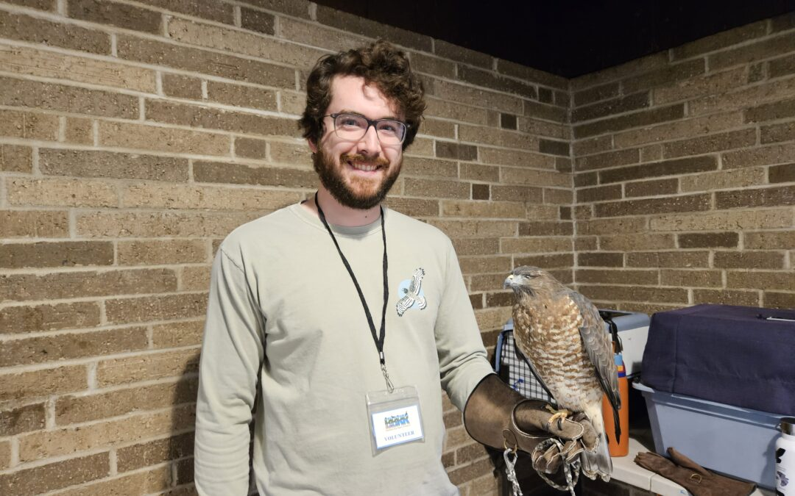
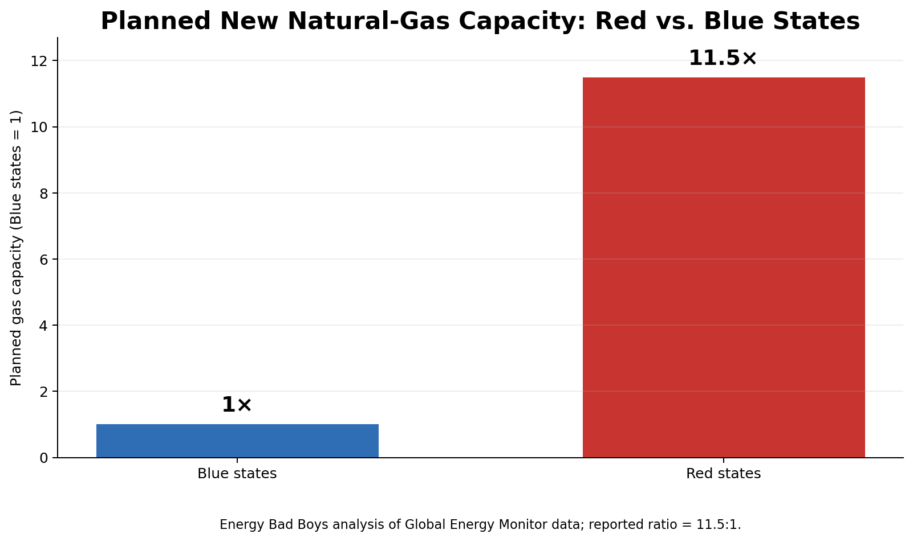
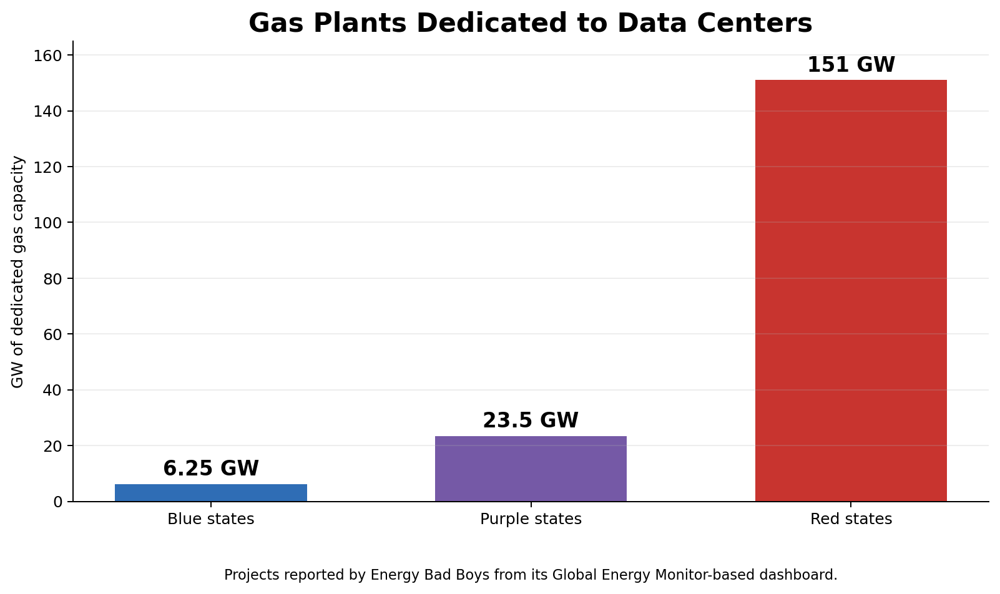
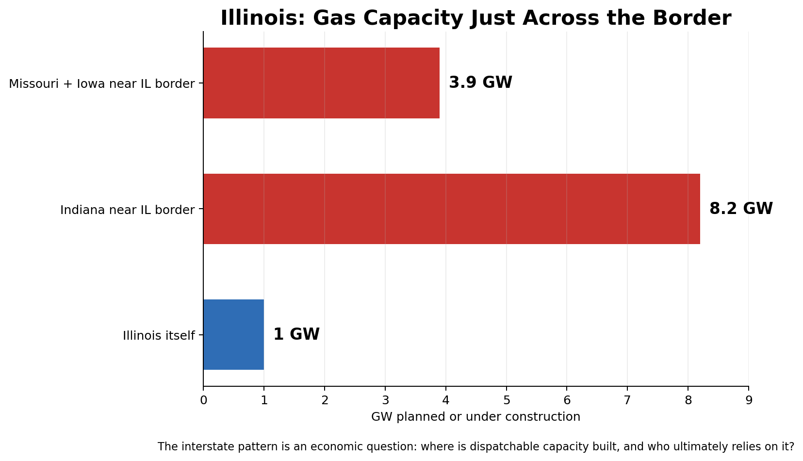
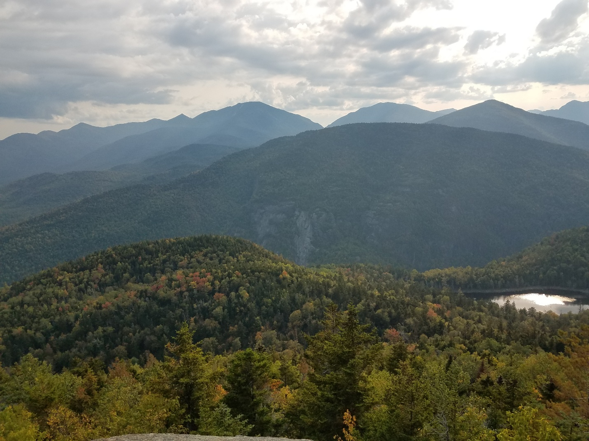
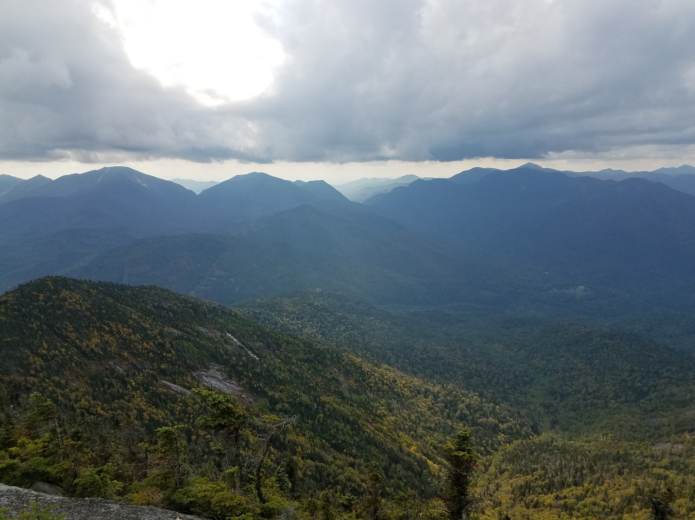
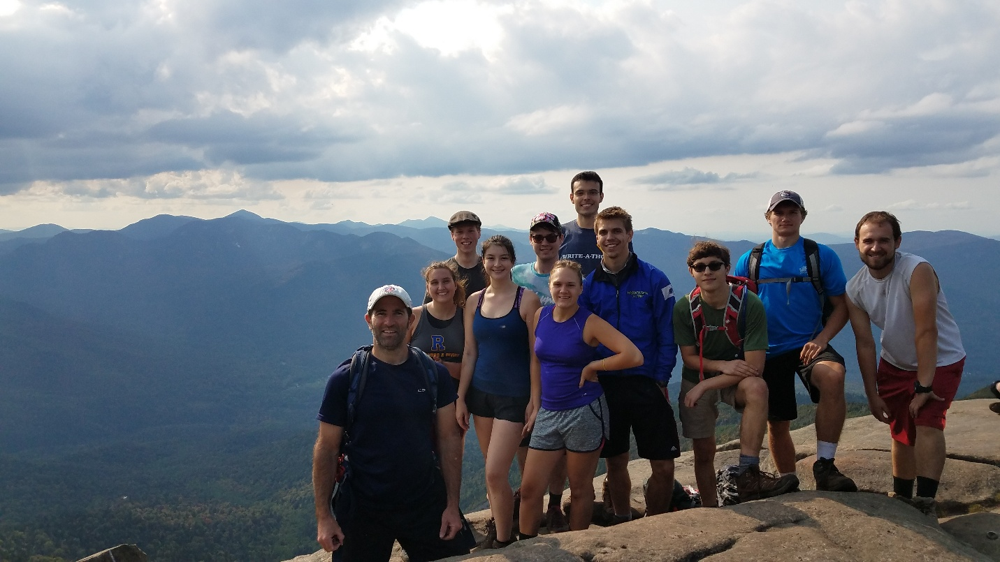
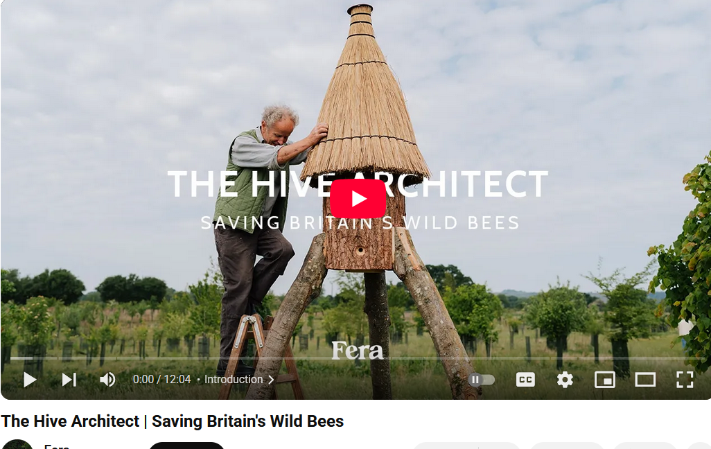

WEEKLY REMINDERS/ANNOUNCEMENTS – Eco 238, Week 4
Topics and Readings This Week: Efficiency! The Ultimate Carbon Calculator (germane to the Wegmans assignment); Tradeoffs in the Environment. These readings and lectures will be particularly useful as you prepare your ideas for the EETT and Interviews.
Braddock Bay Raptor Research: I sent a payment of $50 to them this week, you can see receipts on the website. Three of your classmates in the WTA group accepted their share, so we ended up collecting a gross of $65 meaning most of you playing the game and who owed money actually paid.
https://www.bbrr.org/2027-spring-internships/ in their Hawk Watch and Owl Count and Raptor Banding capacities

Weekly Assignment: I have posted your fourth weekly assignment, you will explore the history of extreme weather in the US. And more!
EETT Project Part Two: is included as part of this week’s homework. If you plan to skip
TA Office Hours and Info
Look for an announcement from our Head TA Jingyao Wang Wu for
an update.
The TAs are going to offer office hours and weekly discussion sessions which will enable you to explore class topics more deeply, and to dive into portions of the weekly class work (and possibly receive credit for doing so).
My Availability
Check tiny.cc/RizzoHours for up to date information.
I will be away from electronics from Friday afternoon through Monday morning.
Office hours on Monday end at 12:15.
Office hours on Weds cancelled due to faculty meeting.
This Week at Rochester
September 18–25
Friday, Sept. 18 | 2–3 p.m. — Careers in Mathematics Panel. Explore career possibilities in mathematics. Hylan Hall, Room 202.
Saturday, Sept. 19 | Noon and 3 p.m. — Cheer on the Yellowjackets. Women’s soccer hosts Otterbein at noon; field hockey hosts Susquehanna at 3 p.m. Both at Fauver Stadium.
Saturday–Sunday, Sept. 19–20 | 7:30–9 p.m. — Versa-Style: Rooted Rhythms. Street dance at Sloan Performing Arts Center’s Smith Theater. General admission: $15.
Monday, Sept. 21 | 7:30 p.m. — Eastman Wind Orchestra. Free concert at Kodak Hall, Eastman Theatre.
Tuesday, Sept. 22 | 6–7 p.m. — The Impact of AI in Engineering. Online alumni panel exploring AI and engineering careers.
Wednesday, Sept. 23 | 1–4 p.m. — Global Fair. Explore study abroad programs and international opportunities. Hirst Lounge, Wilson Commons.
Wednesday, Sept. 23 | 4–6 p.m. — Fenno Award Ceremony and Lecture. Political inquiry and scholarship at Schlegel Hall’s Eisenberg Rotunda.
Wednesday, Sept. 23 | 5–6 p.m. — Plutzik Reading: Christian Wessels. A literary reading in the Welles-Brown Room, Rush Rhees Library.
Wednesday, Sept. 23 | 6–7:30 p.m. — Fall Alumni Career Chats. Connect with alumni in the May Room, Wilson Commons.
Thursday, Sept. 24 | 4–6 p.m. — Fall Career Expo. Meet employers and explore opportunities. Feldman Ballroom, Douglass Commons.
Friday, Sept. 25 | 2–3 p.m. — Data Science and AI Research Symposium. Featuring Benjamín Castañeda and Sean Crowell. Wegmans Hall 1400, with an online option.
Friday, Sept. 25 | 2–4 p.m. — ISO Community Resource Fair. Discover community resources at Feldman Ballroom, Douglass Commons. Free.
All times Eastern. Check event links for registration and admission details. More options: University events calendar · Yellowjackets athletics schedule.
Career Opportunity
Scroll down here a little, Edgeworth just posted.
Upcoming Special Events
Department of Economics Special Event

Title: Trade War: The View from Across Lake America!
Who: Joe Steinberg of the University of Toronto
Date: Tuesday, September 29th
Time: 6pm to 7pm
Location: Morey 321
More Info: It will be followed by a reception in Morey's Rettner Gallery with Dinosaur BBQ from 7-8:30.
RSVP for Food! Please register for the reception by Friday, September 25th using this link, so we can have a reasonable count for our reception order.
Link: https://form.jotform.com/262586026121048
The Politics and Markets Project, Hosted by Professor David Primo
Title: Topic TBD (this will be a moderated panel discussion)
Date: Wednesday, November 4th
Time: 7:30pm to 8:30pm
Location: Wegmans Hall, 1400.
More Info on the PMP: Follow on Instagram
Department of Economics Special Guest Lecture
Title: Human Capital for Humans, with moderation by U of R Economics Undergraduate Isaac Miller
Who: Pablo Pena of the University of Chicago
Date: Thursday, October 8th
Time: 3:30pm
Location: Morey 321
More Info: Why do people marry, have kids, invest in health, or choose a career? Economics has an answer, and it's not "supply and demand," it's human capital theory, the framework Nobel laureate Gary Becker built and spent his career applying to every domain of human life. Pablo Peña studied under Becker at Chicago, taught his famous course after him, and has now written the accessible version of that legendary class: Human Capital for Humans.
Join us for a talk and conversation with Professor Peña about the book — how economists think about parenting, aging, marriage, and the everyday decisions that shape who we become. Expect a short talk, a moderated discussion, and open Q&A. Copies of the book will be available for purchase (and signing) at the event.
About Professor Pena: Pablo Peña first encountered human capital theory twenty years ago as an undergraduate captivated by a course taught by Nobel laureate Gary Becker at the University of Chicago — an experience he's described as immediately clarifying. That encounter led him to TA the course, and eventually to teach it himself. Peña is now an Associate Instructional Professor in Economics and the College at the University of Chicago, specializing in applied price theory, human capital theory, and empirical economics, and his research uses experimental and quasi-experimental methods and large datasets to test economic theories with actionable applications for business, nonprofits, and government. Outside academia, he co-founded Microanalitica, previously served as Director of Private Sector Partnerships at the Development Innovation Lab, and headed Economic Studies at Mexico's National Banking and Securities Commission. He earned his Ph.D. in Economics from the University of Chicago.
His book, Human Capital for Humans: An Accessible Introduction to the Economic Science of People (University of Chicago Press, 2025), has been nominated as a finalist for the Manhattan Institute's 2026 Hayek Book Prize, and has drawn praise from economists including Steven Levitt, Tyler Cowen, and Nobel laureate Michael Kremer.
Department of Economics PIZZA and PAYOFFS Special Event

Title: Pizza and Payoffs: Everything you wanted to know about the Econ major — courses, careers, and what you can actually do with an economics degree.
Who: Professor Lisa Kahn and special guest Chris Nosko
Date: mid-November
Time: TBD
Location: TBD
More Info: Chris Nosko is the head economist for Amazon!
SOME THINGS THAT CAPTURED OUR ATTENTION
Own Goal, Energy Edition #992775: Winter hasn’t started, and Maine heating oil already averages $5.39 a gallon. That’s 62 percent higher than it was at this time last year. Some Maine dealers are already approaching $6.
And we’re starting with less fuel in the tank. New England distillate inventories — heating oil and diesel — are 26 percent lower than last year.
This winter is already more expensive, and it hasn’t started yet.
Can an AI Really Bioengineer a Civilizationally Horrific Virus? (As always, ask, where are the bottlenecks) Look, we have already allowed human beings to do it in all manner of areas, what’s the big deal?
Will Texas and Oklahoma Seek to Leave the US Next? “With a separatist referendum just weeks away, a growing trade war between her home country and the US to navigate, and a potential tsunami of demand for Alberta’s cheap fuel accumulating from aspiring data-center builders, now would seem an inopportune time for Smith to be confronted with an explosive leak detailing the inner contemplations of her cabinet as she tries to thread the natural gas needle. That’s exactly what went down last week, and the blowback has been swift”
What’s a Few $100 Billion Among Friends? Iran War increased energy costs alone by $100 billion … so far.
Almost the Entirety of Nevada is Empty Land: yet NIMBYs would have us believe that Nevada, Canada and Australia have high housing prices because they’ve run out of land. “The project and others like it are a direct result of Nevada’s housing and land shortages. The state needs an estimated 120,000 additional affordable homes but has little land available for development because about 85 percent of it is federally owned and set aside for other purposes like recreation. It is estimated that the state will run out of land to develop by 2032.”
How the financialization of real estate rips out our souls: specifically, the rise of distant owners without any particular interest in making an area beautiful or livable — harms the built environment. “All the qualities that give a place charm or loveliness are ones that are best stewarded by people who live there. Someone who owns the plot from afar, without even visiting, can never understand the subtle details that give it life. And the middleman property developer or manager just will never care.” [New Atlantis] See also this essay on why skyscrapers became glass boxes.
Chopped: “We analyze the impact of wind turbines on house prices, distinguishing between effects of proximity and shadow flicker from rotor blades covering the sun. By utilizing data from 2.4 million house transactions and 6,878 wind turbines in Denmark, we can control for house fixed effects in our estimation. Our results suggest strong negative impacts on house prices, with reductions of up to 12 percent for modern giant turbines. Homes affected by shadow flicker experience an additional decrease in value of 8.1 percent. Our findings suggest a nuanced perspective on the local externalities of wind turbines regarding size and relative location.”
Just A Wee Bit: “Max had much grander ambitions for the island than running it as a small-scale guano mine. Schlemmer wrote to Hawaii’s territorial governor to request a ninety-nine year lease to the island. His presence was necessary to protect the colony of nesting birds from poachers, he argued, since “owing to the depredations of the Japanese, the birds are becoming scarce; and in a few years’ time, unless protected, will be entirely driven away.” But he immediately gave away his true motivations. “I will agree to protect the birds,” wrote Schlemmer, “but ask for the privilege of killing annually [22,000 birds]; the skins of the birds to be turned over to the Territorial Government for sale.” Hawaii would keep ten percent of the proceeds; Schlemmer would pocket the rest.
How did it turn out? “One building was full of the breast feathers of birds in bulk, another was two-thirds full of loose bird wings… On the sand adjacent to the buildings were about two hundred mats held down with rocks, under which were laid out masses of birds’ wings in various stages of curing. Stretched along the beach and over the island were bodies of dead birds in large numbers from which emanated obnoxious odors”
Netherlands Smothered in Nitrogen: “The basic issue is the use of strict quantity targets. With quantity targets, you must hit the threshold no matter the cost. With nitrogen, this means halting construction even amid a housing crisis or forcibly buying out farmers who form a crucial political base.”
CHART(S) OF THE WEEK: The Political Economy of Natural Gas, and Energy Reliability Planned natural-gas capacity is overwhelmingly concentrated in Republican-leaning states. That geographic split matters for electricity reliability, marginal generation, industrial location, data-center investment, and the interstate politics of who builds dispatchable capacity versus who consumes power from it.
1. RED STATES ARE PLANNING ABOUT 11.5× AS MUCH NEW GAS CAPACITY

This is the headline political-economy fact. The reported pipeline of new gas generation is not remotely even across the country: the red-state buildout is roughly an order of magnitude larger than the blue-state buildout.
2. THE DATA-CENTER BUILDOUT MAKES THE DIVIDE EVEN HARDER TO MISS

For gas plants dedicated to data centers, the about 151 GW in red states, 23.5 GW in purple states, and only 6.25 GW in blue states. That means the places competing most aggressively for AI-era load are also the places planning the overwhelming majority of the dedicated dispatchable gas capacity.
3. CAPACITY CAN MOVE ACROSS POLITICAL BORDERS EVEN WHEN PLANTS DO NOT

Illinois illustrates the spillover problem: a little over 1 GW is planned inside Illinois, while roughly 8.2 GW is planned near the Illinois border in Indiana and another 3.9 GW near the border in Missouri and Iowa. This is exactly the kind of federalism/externality question we care about in environmental economics: restricting construction inside one jurisdiction does not eliminate demand for dispatchable electricity; it may relocate generation, emissions, investment, and political conflict.
ZOOM OUT: WHY THIS IS ALSO A EUROPE STORY
The broader lesson is that energy-system choices compound over time. Europe’s recent experience shows the macroeconomic stakes: IMF analysis says high natural-gas prices feed directly into electricity prices because gas often sets the marginal power price; European industrial electricity users have recently paid roughly 2–3 times U.S. and Chinese levels, and the post-2021 energy shock reduced euro-area potential output. The U.S. red–blue divergence is therefore not merely a partisan curiosity—it is a live experiment in how permitting, generation mix, fuel access, and willingness to build dispatchable capacity can shape prices, industrial competitiveness, and regional growth.
Global Energy Monitor, “U.S. gas power proposals tied to data centers nearly double in six months,” Aug. 2026.
PHOTO OF THE WEEK: A Look Back at When We Were Able to Take Econ 238W Into the Field (this is Rocky Peak Ridge and Giant from New Russia with a particularly memorable crew)



VIDEO/DOCUMENTARY/BOOK/CARTOON, ETC OF THE WEEK: In the English countryside, carpenter Matt Somerville has spent the last 14 years building and independently installing about 800 homes for bees. “Wherever I go, bees come,” he says. In the short film The Hive Architect, Somerville hollows out logs, crafts conical-roofed hives, and carries them into fields to set up on his own.

* * *QUOTE * * *
“The fact that logic cannot satisfy us awakens an almost
insatiable hunger for the irrational.”
– A. N. Wilson